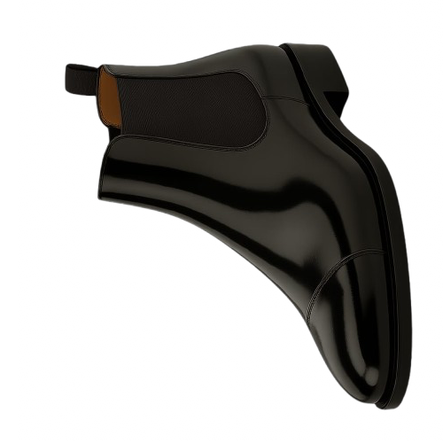

Chelsea
A bota Chelsea surgiu no final do século XIX, tornando-se popular na Inglaterra vitoriana por seu design prático e elegante. Caracteriza-se pelas laterais em elástico, que facilitam o calce, e pelo formato justo que valoriza o tornozelo. Originalmente usada por cavaleiros e depois adotada pela alta sociedade, a bota Chelsea ganhou fama mundial nas décadas seguintes. Hoje, é uma escolha versátil que transita entre o formal e o casual com facilidade. Ideal para complementar desde jeans até ternos, a Chelsea é perfeita para quem busca estilo e conforto em qualquer ocasião, seja no trabalho, eventos sociais ou passeios urbanos.